EventRate Cookbook
The EventRate class is for making plots of: * number of events per unit time (often called "counts") * energy release rate / cumulative magnitude per unit time
Contents
First we create a Catalog object from the Redoubt dataset
dbpath = Catalog.demo.demodb('avo'); redoubtLon = -152.7431; redoubtLat = 60.4853; maxR = km2deg(20.0); catalogObject = Catalog.retrieve('antelope', 'dbpath', dbpath, ... 'radialcoordinates', [redoubtLat redoubtLon maxR]);
Loading data from /home/glenn/src/GISMO/classes/+Catalog/+demo/css3.0/avodb200903 Got 1397 events
For a quick plot of earthquakes per hour, we create an eventrate object and then plot it. Here our binsize is 1/24 days, i.e. 1 hour.
eventrateObject = catalogObject.eventrate('binsize', 1/24);
eventrateObject.plot()
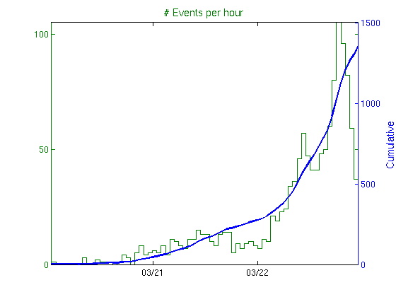 Change to a smaller bin size of just 1 minute:
eventrateObject = catalogObject.eventrate('binsize', 20/1440);
plot(eventrateObject);
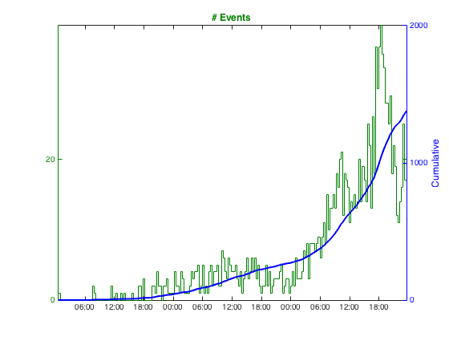 Note that `eventrateObject.plot()` and `plot(eventrateObject)` do exactly the same thing. The first is the object-oriented style `OBJECT.METHOD(INPUT PARAMETERS)`, the second is the functional style `FUNCTION(OBJECT, INPUT PARAMETERS)`. We could just as easily do `eventrate(catalogObject, 'binsize', 20/1440)` too, but the object oriented style is preferable.
Event rates for overlapping time windows
Sometimes it is desirable to compute event rate metrics for sliding - i.e. overlapping - time windows. This is easily done with the 'stepsize' parameter. If omitted, stepsize defaults to the binsize - which is the length of the time window. So in the previous example, both binsize and stepsize were 1.0 hours. But we can just as easily compute an eventrate object for the same Events object with a binsize of 1 hour, and stepsize of just 5 minutes.
eventrateObject = catalogObject.eventrate('binsize', 1/24, 'stepsize', 5/1440); eventrateObject.plot()

Plots of other event rate metrics
eventrateObject.plot()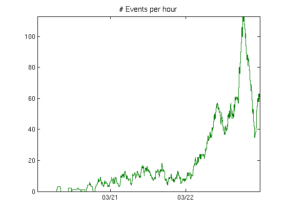
is actually equivalent to typing:
eventrateObject.plot('metric', 'counts');
The full list of metrics that can be plotted are:
% * counts % * mean_rate % * median_rate % * cum_mag % * mean_mag % * median_mag % * energy % % All of these are properties of an eventrate object except for energy, which is computed from _cum_mag_ on-the-fly. Several can be plotted at once in subplots of the same figure using a cell array: eventrateObject.plot('metric', {'mean_rate'; 'median_rate'; 'mean_mag'; 'cum_mag'});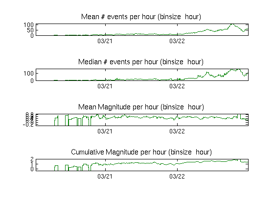
They can of course be plotted in separate figure windows:
eventrateObject.plot('metric', 'mean_rate') eventrateObject.plot('metric', 'median_rate') eventrateObject.plot('metric', 'mean_mag') eventrateObject.plot('metric', 'cum_mag')
 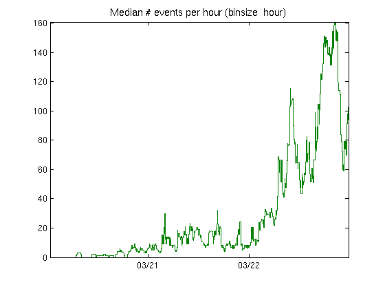 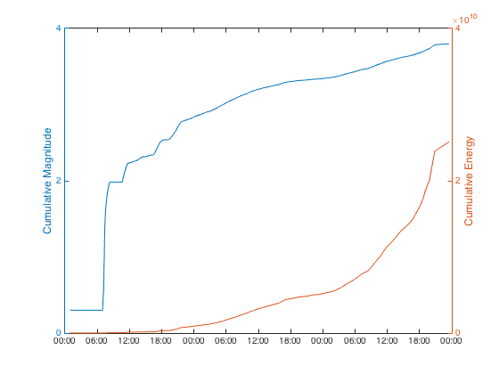 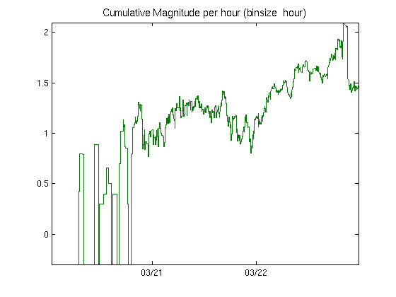
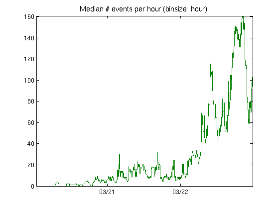 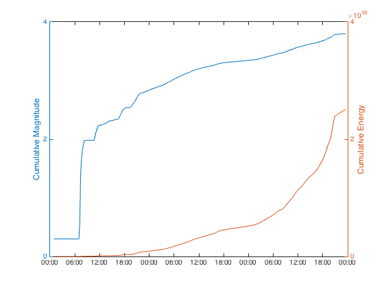 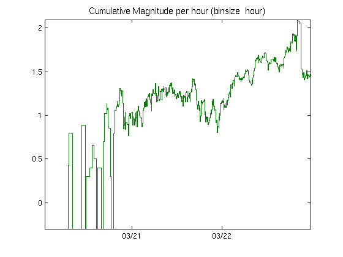 These are the same metrics, binsize and stepsize used by the [AVO swarm tracking system] (http://www.aeic.alaska.edu/input/west/papers/2009_srl_thompson_redoubtSwarms.pdf).
Other plot types
Two more simple plot types are:
eventrateObject.helenaplot()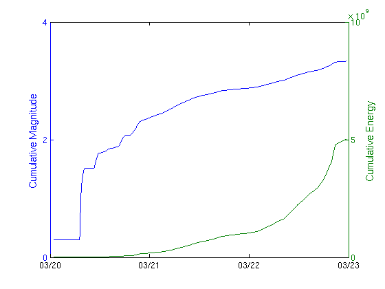
and:
eventrateObject.pythonplot()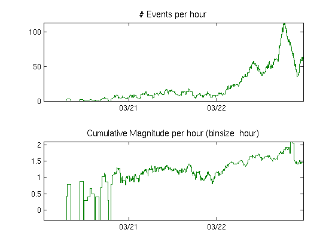
End of tutorial